Insertion Sort is a simple, comparison-based sorting algorithm that builds a sorted portion of an array one element at a time.
It works by taking an element from the unsorted portion, finding its correct position in the sorted portion, and inserting it there by shifting larger elements to the right.
Insertion Sort is especially useful for small datasets, nearly sorted arrays, and as a building block in hybrid sorting algorithms.
Imagine sorting playing cards in your hand.
You pick up cards one at a time. Whenever you pick up a new card, you compare it with the cards already in your hand and insert it into the correct position.
Insertion Sort works exactly the same way.
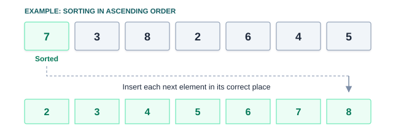
An array is conceptually divided into two portions:
Initially, the first element is considered sorted because any single element is already sorted.
For an array containing n elements:
1, treating index 0 as the sorted portion.key.key with elements to its left, beginning with the immediate predecessor.key one position to the right.key into the newly available position.The important distinction is that Insertion Sort shifts elements instead of repeatedly swapping them in its conventional implementation.
Explore the complete sorting process below. Move through the steps to see how the key is selected, larger elements are shifted, and the sorted portion expands.
Consider:
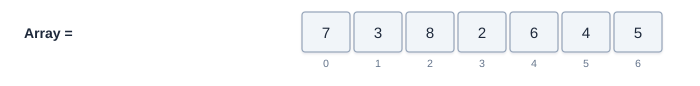
We'll sort it into ascending order.
Initial state
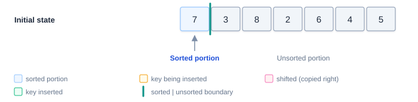
The vertical separator | distinguishes the sorted and unsorted portions.
Pass 1: Insert 3
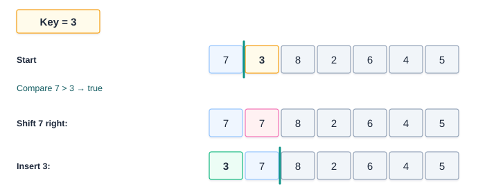
Now the first two elements are sorted.
Pass 2: Insert 8
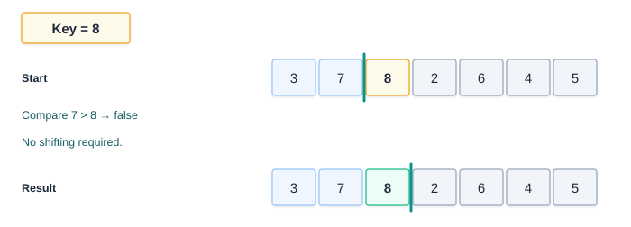
This shows why Insertion Sort performs efficiently on already sorted or nearly sorted arrays.
Pass 3: Insert 2
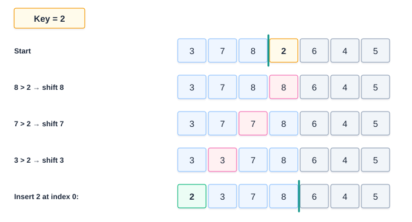
Notice that the original value 2 was saved in key, so it isn't lost when 8 is copied over its original position.
Pass 4: Insert 6
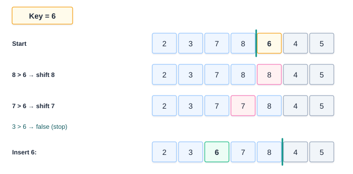
Pass 5: Insert 4
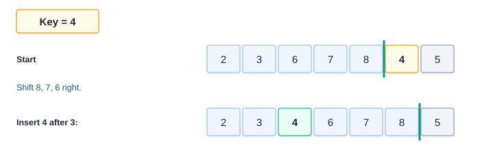
Pass 6: Insert 5
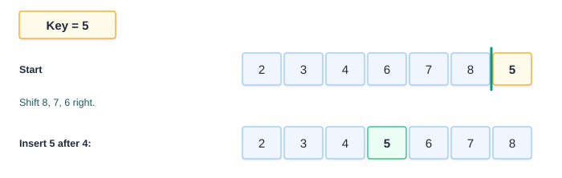
The entire array is now sorted.
Summary of all passes
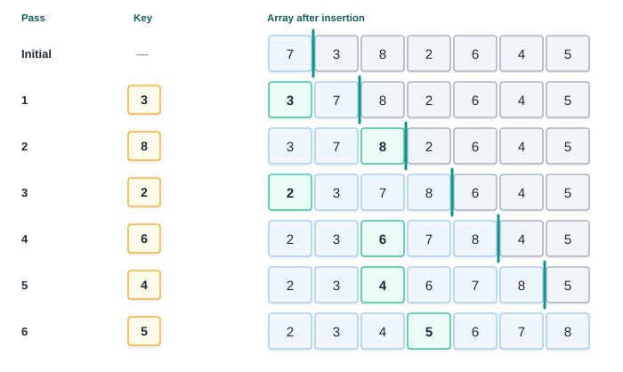
For an array of n elements, conventional Insertion Sort performs exactly n - 1 outer-loop passes, although some passes require no shifting.
Here is the standard and most widely used implementation of Insertion Sort.
public void insertionSort(int[] arr) {
int n = arr.length;
// Start from the second element
for (int i = 1; i < n; i++) {
int key = arr[i];
int j = i - 1;
// Shift elements greater than key
// one position to the right
while (j >= 0 && arr[j] > key) {
arr[j + 1] = arr[j];
j--;
}
// Insert key into its correct position
arr[j + 1] = key;
}
}
public void main() {
int[] arr = {7, 3, 8, 2, 6, 4, 5};
Console.draw("Before: {arr}");
insertionSort(arr);
Console.draw("After: {arr}");
}Output
Before: [7, 3, 8, 2, 6, 4, 5]
After: [2, 3, 4, 5, 6, 7, 8]Understanding the code
1. Why does the outer loop start at index 1?
for (int i = 1; i < n; i++)The first element is already sorted by itself, so the algorithm starts with the second element.
At the beginning of iteration i, the elements from 0 through i - 1 are sorted.
2. Why do we store arr[i] in key?
int key = arr[i];The shifting process may overwrite the original position of arr[i].
Therefore, we store its value separately before shifting begins.
3. Why do we start j at i - 1?
int j = i - 1;We must compare the key with the rightmost element of the already sorted portion first, then move backward.
4. Why do we use arr[j] > key?
while (j >= 0 && arr[j] > key)We want to shift only the elements that are strictly greater than the current key.
If arr[j] <= key, we've found the correct insertion location.
Also, Java's short-circuit && ensures that arr[j] is not accessed when j is negative.
5. Why is the insertion position j + 1?
arr[j + 1] = key;The loop stops either because j becomes -1, or because arr[j] <= key.
In either case, the correct insertion position is immediately after j.
For example:
Sorted portion: [2, 3, 7, 8]
Key = 6
Start j = 3
8 > 6 → shift, j = 2
7 > 6 → shift, j = 1
3 > 6 → false
Insert at j + 1 = 2
Result: [2, 3, 6, 7, 8]The time complexity of Insertion Sort depends heavily on the initial arrangement of elements.
| Case | Time complexity | Reason |
|---|---|---|
| Best | O(n) | Already sorted |
| Average | O(n^2) | Some elements shift |
| Worst | O(n^2) | Reverse sorted |
Best case — O(n)
Consider:
[1, 2, 3, 4, 5]Every element is already in its correct position.
For each outer-loop iteration, the algorithm makes one key comparison and performs no shifts.
i = 1 → Compare 1 > 2 → false
i = 2 → Compare 2 > 3 → false
i = 3 → Compare 3 > 4 → false
i = 4 → Compare 4 > 5 → falseTotal key comparisons:
C_{\text{best}}(n)=n-1
Therefore:
\boxed{T_{\text{best}}(n)=\Theta(n)}
This is one of the primary advantages of Insertion Sort.
Worst case — O(n²)
Consider a reverse-sorted array:
[5, 4, 3, 2, 1]Every new element must be moved to the beginning of the sorted portion.
| Pass | Key comparisons | Shifts |
|---|---|---|
| 1 | 1 | 1 |
| 2 | 2 | 2 |
| 3 | 3 | 3 |
| 4 | 4 | 4 |
| Total | 10 | 10 |
For n elements, the total number of key comparisons is:
C_{\text{worst}}(n)=1+2+3+\cdots+(n-1)
Using the arithmetic series formula:
C_{\text{worst}}(n)=\frac{n(n-1)}{2}
Hence:
\boxed{T_{\text{worst}}(n)=\Theta(n^2)}
Average case — O(n²)
In a randomly arranged array of distinct elements, the key typically needs to move past some of the preceding elements.
For uniformly random permutations, the expected total number of shifts is:
E[\text{shifts}]=\frac{n(n-1)}{4}
This is approximately half the worst-case number of shifts, but its growth is still quadratic.
\boxed{T_{\text{average}}(n)=\Theta(n^2)}
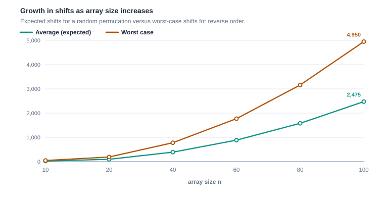
These are theoretical shift counts, not measured execution times. Both curves grow quadratically.
Insertion Sort requires only two additional scalar variables for sorting:
int key = arr[i];
int j = i - 1;No extra array, auxiliary buffer, or recursion stack is needed in the iterative implementation.
Therefore:
\boxed{\text{Auxiliary space}=\Theta(1)}
This makes conventional Insertion Sort an in-place sorting algorithm.
| Property | Insertion Sort |
|---|---|
| Algorithm category | Comparison-based |
| Technique | Incremental insertion |
| In-place | Yes |
| Stable | Yes, with strict > |
| Adaptive | Yes |
| Online | Yes |
| Recursive by default | No |
| Best-case time | O(n) |
| Average-case time | O(n²) |
| Worst-case time | O(n²) |
| Auxiliary space | O(1) |
What does stable mean?
A sorting algorithm is stable if elements with equal sort keys retain their original relative order.
Consider records:
[(4, A), (2, B), (4, C)]We sort by the numeric value only.
The expected stable output is:
[(2, B), (4, A), (4, C)]Notice that A remains before C, because both records have the same key 4.
Insertion Sort preserves this order because it uses:
arr[j] > keyrather than:
arr[j] >= keyThe strict comparison does not move equal-key elements past one another.
What does adaptive mean?
An adaptive sorting algorithm performs less work when its input is partially sorted.
For example:
[1, 2, 3, 4, 6, 5, 7, 8]Only 6 needs to be shifted when inserting 5. The rest of the array requires no shifting.
This makes Insertion Sort particularly efficient for nearly sorted data.
What does online mean?
An online algorithm can process elements incrementally, without needing to know the complete input in advance.
For example:
Current sorted array: [2, 4, 7]
New element arrives: 5
Updated sorted array: [2, 4, 5, 7]The new element can be inserted while preserving sorted order.
However, insertion into a normal array can still take O(n) time due to shifting.
A loop invariant is a property that remains true before and after each iteration.
For Insertion Sort, the main invariant is:
At the beginning of outer-loop iteration i, the subarray arr[0 ... i-1] is sorted and contains exactly the elements originally found in that prefix.
We can prove correctness using three steps.
Initialization
Before the first iteration, i = 1.
The sorted portion contains only arr[0].
A single-element array is always sorted.
Therefore, the invariant is true.
Maintenance
Assume the invariant holds at the beginning of iteration i.
The algorithm:
arr[i] in key.key after the last element that is less than or equal to it.The resulting prefix arr[0 ... i] is sorted and contains the same elements as before.
Therefore, the invariant is maintained.
Termination
The outer loop ends when i = n.
At that point, the invariant tells us:
arr[0 ... n-1] is sortedThis is the entire array.
Therefore, Insertion Sort correctly sorts the input.
It's helpful to instrument the algorithm to see how much work it performs.
public void main() {
int[] arr = {7, 3, 8, 2, 6, 4, 5};
int comparisons = 0;
int shifts = 0;
for (int i = 1; i < arr.length; i++) {
int key = arr[i];
int j = i - 1;
while (j >= 0) {
comparisons++;
if (arr[j] <= key)
break;
arr[j + 1] = arr[j];
shifts++;
j--;
}
arr[j + 1] = key;
}
Console.draw("{arr}");
Console.draw("Comparisons: {comparisons}");
Console.draw("Shifts: {shifts}");
}Output
[2, 3, 4, 5, 6, 7, 8]
Comparisons: 16
Shifts: 12Here, comparisons count element-to-key comparisons, not index-boundary checks. Shifts count only assignments made to move existing elements rightward, excluding final key insertions.
An interesting mathematical property is that the number of shifts in standard Insertion Sort is exactly equal to the number of inversions in the original array.
An inversion is a pair of indices i < j for which arr[i] > arr[j].
Every shift eliminates one such inversion.
This explains why Insertion Sort is efficient when an array is already close to sorted.
In the standard algorithm, the insertion position is found using linear search.
But because the left portion is already sorted, we can use binary search to find the insertion position.
This variation is called Binary Insertion Sort.
public void binaryInsertionSort(int[] arr) {
for (int i = 1; i < arr.length; i++) {
int key = arr[i];
// Binary search for insertion position
int low = 0;
int high = i;
while (low < high) {
int mid = low + (high - low) / 2;
if (arr[mid] <= key)
low = mid + 1;
else
high = mid;
}
// Shift elements to create space
for (int j = i; j > low; j--)
arr[j] = arr[j - 1];
arr[low] = key;
}
}Does Binary Insertion Sort become O(n log n)?
No. Binary search reduces the number of comparisons, but not the number of required shifts.
| Operation | Standard insertion | Binary insertion |
|---|---|---|
| Find insertion position | O(n) worst case | O(log n) |
| Shift elements | O(n) | O(n) |
| Total worst-case time | O(n²) | O(n²) |
| Auxiliary space | O(1) | O(1) |
| Stable | Yes | Yes, as implemented |
Across all iterations, Binary Insertion Sort uses O(n log n) element comparisons, but may still perform O(n²) shifts.
The <= condition in the binary search finds a position after existing equal elements, preserving stability.
Binary Insertion Sort can be useful when comparisons are expensive, even though its asymptotic running time remains quadratic.
The algorithm can also sort arbitrary objects through a Comparator.
public <T> void insertionSort(T[] arr, Comparator<? super T> comparator) {
for (int i = 1; i < arr.length; i++) {
T key = arr[i];
int j = i - 1;
while (j >= 0 && comparator.compare(arr[j], key) > 0) {
arr[j + 1] = arr[j];
j--;
}
arr[j + 1] = key;
}
}For example, you could sort employees by salary, students by marks, or products by price.
To preserve stability, continue shifting only when the comparator returns a positive value.
These three algorithms are often introduced together, but they behave differently.
| Feature | Insertion Sort | Bubble Sort | Selection Sort |
|---|---|---|---|
| Main technique | Insert key into sorted prefix | Swap adjacent out-of-order elements | Select minimum |
| Best time | O(n) | O(n) with early-exit optimization | O(n²) |
| Average time | O(n²) | O(n²) | O(n²) |
| Worst time | O(n²) | O(n²) | O(n²) |
| Auxiliary space | O(1) | O(1) | O(1) |
| Stable | Yes | Yes | Usually no |
| Adaptive | Yes | Yes, when optimized | No |
| Data movement | Shifts | Adjacent swaps | Few swaps |
Insertion Sort is generally a better choice than basic Bubble Sort for small arrays, because shifting an element is typically cheaper than repeatedly swapping pairs.
Selection Sort may be useful in situations where minimizing the number of writes is particularly important.
Advantages
Disadvantages
Insertion Sort is particularly valuable for sorting small subarrays inside more sophisticated algorithms.
For instance, hybrid sorting implementations may use a fast general-purpose algorithm on large partitions and switch to Insertion Sort when the partitions become sufficiently small.
This can improve performance by avoiding recursion and partition-management overhead on tiny datasets.
Insertion Sort is also useful when maintaining a sorted sequence of small size or processing data that is already nearly sorted.
The broader principle is important: an algorithm with O(n²) complexity can still be faster than an O(n log n) algorithm for sufficiently small inputs because constant factors matter.
| Mistake | Problem |
|---|---|
Starting the outer loop at 0 unnecessarily | The first element is already sorted |
Using arr[j] >= key | Can destroy stability |
Forgetting key = arr[i] | The original value may be overwritten |
Using j instead of j + 1 for insertion | Places the key incorrectly |
Checking arr[j] before j >= 0 | Can cause an index-out-of-bounds exception |
| Using repeated swaps when shifts suffice | Often increases assignment overhead |
The standard implementation safely handles empty arrays, single-element arrays, duplicates, negative numbers, and already sorted arrays. As written, it expects a non-null array.
Is Insertion Sort stable?
Yes. Standard Insertion Sort is stable because elements with equal keys are not shifted past one another.
Why is its best-case time O(n)?
When the input is already sorted, each element requires only one comparison with its predecessor and no shifts.
Is Insertion Sort in-place?
Yes. The iterative version uses O(1) auxiliary space.
How many passes are required?
For n elements, the conventional implementation executes n - 1 outer-loop iterations.
Why does it work well on nearly sorted arrays?
Because the number of shifts depends on the number of inversions, which is small for nearly sorted input.
Does binary search make Insertion Sort O(n log n)?
No. Finding the insertion position becomes faster, but shifting elements still requires O(n²) total work in the worst case.
Can Insertion Sort sort in descending order?
Yes. Reverse the comparison:
while (j >= 0 && arr[j] < key)This shifts smaller elements to the right.
Core principle: Maintain a sorted prefix, take the next element, shift larger elements to the right, and insert the key into its correct position.
Insertion Sort is one of the most useful sorting algorithms to understand because it introduces key ideas used in more advanced algorithms: loop invariants, adaptiveness, stability, in-place data movement, inversion counting, and hybrid algorithm optimization.